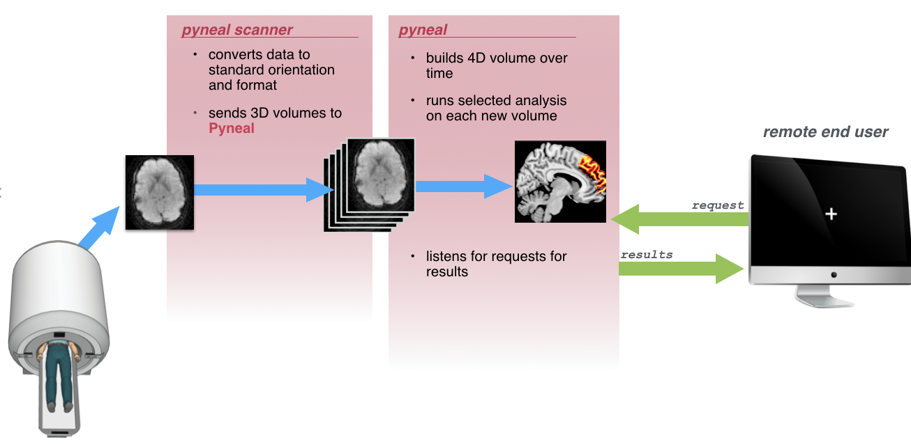

Setup¶
The set-up instructions are broken down by Pyneal Scanner and Pyneal. If you haven't already, follow the installation instructions to configure your environment, and read the section on definitions, as those definitions are used throughout these instructions.
After you have finished setting up Pyneal Scanner and Pyneal using the instructions below, you can verify your install using various simulation tools. These tools are helpful in troubleshooting any issues you may run into during install/setup.

Setting up your network¶
Pyneal communicates with other components in the pipeline, like Pyneal Scanner and any End User, via TCP/IP sockets. These are network communication portals very similar to how a web browser communicates with websites hosted on remote servers.
For this type of commnunication, it's useful to think of one end as the server, listening for and responding to requests from remote clients. Clients connect to the server by specifying the server's IP address and a specific port number.
In our case, Pyneal (running on the analysis computer) is always playing the role of the server. The IP address you use for Pyneal will depend on how the rest of your environment is set up:
-
If all components are running on the same machine, you can use the generic loopback IP address
127.0.0.1. Put another way, you can use this address if and only if Pyneal Scanner and Pyneal and any End User that requests data are all running from the same physical machine. This might be the case, for instance, if you are testing/debugging certain steps of your analysis (see simulation tools) -
In all other cases, you have to figure out the IP address assigned to the analysis computer running Pyneal.
Pyneal will use one available port number for communication with Pyneal Scanner, and an additional port number dedicated for communication with remote end users or devices. You can manually specify the port number to use when setting up Pyneal
If you don't know which port numbers to use, check with a network administrator, or simply try choosing ones in the range of 1024-49151. If you happen to choose a port number that is unavailable, Pyneal will return an error message. In that event, try a different number.
Pyneal Scanner¶
When you download Pyneal everything is contained in the root pyneal directory.
From the pyneal directory, copy the pyneal_scanner directory to a new location on the scanner computer.
On the scanner computer, launch Pyneal Scanner from the command line by navigating to the pyneal_scanner directory and running pynealScanner.py
cd pyneal_scanner
python pynealScanner.py
Pyneal Scanner uses a set of configuration parameters that you can modify to fit your environment. These are stored in file named scannerConfig.yaml in the pyneal_scanner directory.
If you're running Pyneal Scanner for the first time, this file won't exist yet. You can either create this file manually, or wait until pynealScanner.py prompts you to fill in any missing configuration values from the command line. Any values you enter from the command line will be saved in a new scannerConfig.yaml file.
The scannerConfig.yaml file allows you to customize Pyneal Scanner to your scanning environment. The file contains just a few parameters stored as key:value pairs:
scannerBaseDir: /path/to/new/scans
scannerMake: GE
pynealSocketHost: 127.0.0.1
pynealSocketPort: '9999'
Configuration Keys:
-
scannerBaseDir: The fixed portion of the directory path to where new reconstructed images will be appear during a scan. That is, the part that remains constant from scan to scan. Knowing what to set this value to can differ according to different scanner manufacturers:
-
GE: During a scan, new slices dicom files are written to a directory on the scanner console. The path to that directory can be broken apart like
[scannerBaseDir]/[sessionDir]/[seriesDir], where- [scannerBaseDir]: path that remains constant across all scans
- [sessionDir]: directories that can change from session to session, named like
p###/e###where the specific#values are unknown in advance. - [seriesDir]: series specific directory named like
s###where the specific#values are unknown in advance. Each new scan during a given exam session will be assigned a uniques###dir.
You only need to specify the path to the
scannerBaseDirin thescannerConfig.yamlfile; Pyneal Scanner will automaticaly find the most recently modified session and series directories and monitor for new series directories to appear. When you runpynealScanner.pyyou will see a printout in the terminal window about the names, sizes, and modification dates of all series directories in the session directory. -
Siemens: Siemens scanners can export reconstructed dicom images to a remote directory. The dicom images are mosaic files, one per volume, in which all slices from the volume are arranged in a 2D grid (or, mosaic, if you will). Siemens will export all files from all series during your session to the same directory, which we'll refer to as the
scannerBaseDir. Each mosaic file follows a naming pattern that indicates the series number and volume number of the data contained within. The full path to a given mosaic file will look like[scannerBaseDir]/[session#]_[series#]_[volume#].dcm, where- [scannerBaseDir]: path to remote directory that will receive all files throughout the session.
- [session#]: 3 characters representing the current session number, e.g. session 1:
001 - [series#]: 6 characters representing the current series number, e.g. series 5:
000005 - [volume#]: 6 characters represenitng the current volume number, e.g. volume 4:
000004
-
Philips: Philips scanners have the option to export reconstructed PAR/REC files to a remote directory. The path to that directory can be broken apart like
[scannerBaseDir]/[seriesDir], where- [scannerBaseDir]: path to remote directory that remains constant across all scans
- [seriesDir]: series specific directory named like
####
You only need to specify the path to the
scannerBaseDirin thescannerConfig.yamlfile; Pyneal Scanner will monitor for new series directories and/or files to appear. -
-
scannerMake: Scanner Manufacturer, must be one of
GE,Siemens, orPhilips(case sensitive) - pynealSocketHost: I.P. address of the analysis computer running Pyneal. If the analysis and scanner computers are the same, you can use
127.0.0.1, otherwise you must specify an I.P. for the analysis computer that is accessible to remote computers. - pynealSocketPort: The port number over which Pyneal is listening for incoming data.
Pyneal¶
Launch Pyneal from the command line by navigating in to the pyneal directory and running pyneal.py
Using Setup GUI¶
The typical way to configure Pyneal for the current session is by using the setup GUI. When you launch pyneal.py a GUI will appear, allowing you to configure Pyneal to the current experiment
cd pyneal
python pyneal.py

-
Communication:
- Pyneal Host IP: The IP address of the machine running Pyneal (i.e. the analysis machine). This is the IP address that Pyneal Scanner will try to connect to, as well as any end user that is making requests for results. Make sure, therefore, that this is an IP address that is accessible to any remote machine that needs it. If you are doing everything locally from the same machine (e.g. testing, running simulations, etc), you can set this to the local host, or loopback address, at
127.0.0.1. However, in all other situations, you'll probably want this to be the unique IP address assigned to the network card in the analysis machine. - Pyneal-Scanner Port: The port number over which Pyneal will be listening for incoming data from Pyneal Scanner. Note that this number should match the port number specified in the pynealSocketPort configuration field of the Pyneal Scanner set up.
- Results Server Port: The port number that Pyneal will use to set up the Results Server. Remote machines that wish to retrieve real-time analysis output during a scan can send requests over this port number. See Requesting Results
- Pyneal Host IP: The IP address of the machine running Pyneal (i.e. the analysis machine). This is the IP address that Pyneal Scanner will try to connect to, as well as any end user that is making requests for results. Make sure, therefore, that this is an IP address that is accessible to any remote machine that needs it. If you are doing everything locally from the same machine (e.g. testing, running simulations, etc), you can set this to the local host, or loopback address, at
-
Mask: Path to mask file (Nifti - .nii/.nii.gz) to be used during real-time analysis. Each incoming 3D volume will be masked to remove non-relevant voxels. The mask must match the dimensions and orientation of incoming functional data (see Creating Masks for Real-time Analysis). The mask will limit which voxels get passed on to the analysis stage. So, for example:
- To calculate the Average ROI activation at every timepoint, choose a mask file that represents the target ROI.
- If Weighted Mask? is checked, the voxel values will be used as weights during the analysis.
- For a Custom analysis that uses the entire brain volume, choose a mask file that represents a whole brain mask (see Creating Masks for Real-time Analysis).
-
Preprocessing: Set the number of timepoints for the current scan
-
Analysis: Real-time analysis options. The analysis you select will be computed at every timepoint throughout the scan.
- Average: Compute the average activation at each timepoint across all voxels within the mask
- Median: Compute the median activation at each timepoint across all voxels within the mask
- Custom: Choose a custom analysis script. This script will be executed at each new timepoint (see Custom Analysis Scripts)
-
Output:
- Choose an output directory to store logs and results from the current session. The output from each new series will be stored as a subdirectory in this directory, named sequentially like 'pyneal_001'.
- Launch Dashboard: Check this box to launch an interactive dashboard that will allow you to monitor the status of the scan once it begins.
Behind the scenes, all of the relevant Pyneal configuration settings are stored as key:value pairs in a file stored at pyneal/src/setupConfig.yaml. (In fact, the GUI simply reads this file at launch to get the previous configuration options, and then overwrites this file with the current GUI options whenever you click submit).
pynealHost: 127.0.0.1
pynealScannerPort: 5555
resultsServerPort: 5556
maskFile: /path/to/mask/file.nii.gz
maskIsWeighted: false
numTimePts: 60
analysisChoice: Average
outputPath: /path/to/store/output
launchDashboard: true
dashboardPort: 5557
dashboardClientPort: 5558
Configuration Keys:
- pynealHost: The IP address of the machine running Pyneal (i.e. the analysis machine). This is the IP address that Pyneal Scanner will try to connect to, as well as any end user that is making requests for results.
- pynealScannerPort: Port number over which Pyneal will be listening for incoming data
- resultsServerPort: Port number that Pyneal will use to set up the Results Server
- maskFile: Path to mask file (Nifti - .nii/.nii.gz) to be used during real-time analysis
- maskIsWeighted: Voxel values in mask represent weights [true/false]
- numTimePts: Number of timepoints in current scan
- analysisChoice: Real-time analysis options [Average/Median/Path to custom analysis file]
- outputPath: Path to output directory where logs and results will be saved
- launchDashboard: Launch dashboard to monitor real-time scan [true/false]
- dashboardPort: Port number over which to launch the dashboard webserver (NOTE: this key does not appear in the setup GUI)
- dashboardClientPort: Port number that browsers can use to connect to the dashboard (NOTE: this key does not appear in the setup GUI)
Custom Settings Files¶
You can supply your own custom setting file with the configurate keys described above in one of two ways:
via GUI:¶
At the top of the setup GUI you have the option to load a custom settings file. A custom settings should be a .yaml file with values for one or more of the configuration keys above. By loading a custom settings file, the GUI will be populated with whichever configure keys are included; any non-included keys will get their values from the setupConfig.yaml file as normal.
The option allows users to create settings files on a per-project basis, and easily configure Pyneal to match the project demands.
via command line:¶
Alternatively, you can supply the path to this file at the command line when you launch Pyneal
python pyneal.py --settingsFile /Path/to/custom/settingsFile.yaml
or
python pyneal.py -s /Path/to/custom/settingsFile.yaml
Launching Pyneal "Headless"¶
If for whatever reason you wish to launch Pyneal without opening the setup GUI, you can run in "headless" mode
python pyneal.py --noGUI
In this case, Pyneal will read the setupConfig.yaml file that was saved locally after the last time you ran Pyneal, and use those settings. Altnernatively, you can also supply the path to a different settings file using the steps described above